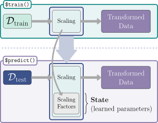
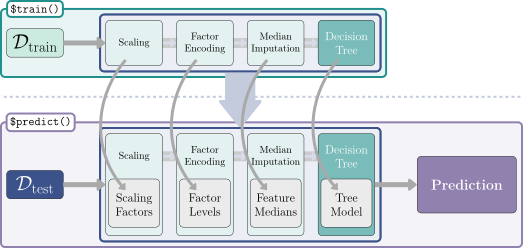

PipeOp 的 $train() 方法既变换数据（矩形），也创建一个状态，即预测时变换数据所需的缩放因子。
Martin Binder
慕尼黑大学（Ludwig-Maximilians-Universität München）与慕尼黑机器学习中心（MCML）
Florian Pfisterer
慕尼黑大学（Ludwig-Maximilians-Universität München）
mlr3 旨在为机器学习从业者提供一个抽象层，让用户可以快速将一个算法替换为另一个，而无需具备底层实现的专业知识。Task、Learner 与 Measure 对象的统一接口意味着，对于任何开箱即用的模型，只需几行代码就可以运行复杂的基准测试（benchmark）与调优（tuning）实验；也就是说，如果你只是想用底层算法的基础实现来运行一个实验，我们希望这已经足够简单易行。
背景与解释（译者注）：本章是连接「基础建模」与「预处理实战（第 9 章）」的桥梁。mlr3 生态的核心理念是「一切皆对象」：任务（Task）描述数据、学习器（Learner）描述算法、度量（Measure）描述目标、重采样（Resampling）描述评估方案。而 mlr3pipelines 进一步把「数据预处理 + 建模」这一整套流水线（Pipeline）也对象化，从而可以在整个流程层面做基准测试与调优。这种模块化思想与 scikit-learn 的 Pipeline、tidymodels 的 workflow 一脉相承，熟悉任一框架的读者都能很快迁移。
mlr3pipelines (Binder et al. 2021) 将这种模块化再推进一步，把它扩展到可能包含数据预处理（第 9 章）、构建集成（ensemble）模型、乃至更复杂的元模型的工作流中。mlr3pipelines 使得我们能够用一些积木式的构建块来搭建 Learner 内部的各个步骤，这些构建块继承自 PipeOp 类。PipeOp 之间可以用有向边（directed edges）连接，形成一个 Graph 即「管道（pipeline）」，它表示的是数据在这些操作之间流动的路径。在模型训练阶段，Graph 中的各个 PipeOp 对给定的 Task 进行变换，随后的 PipeOp 接收变换后的 Task 作为输入。除了变换数据之外，PipeOp 还会生成一个状态（state），该状态用于在预测阶段指导 PipeOp 的操作，这与学习器在训练时学习并存储模型参数/权重、进而在预测时使用这些参数/权重的方式类似。图 7.1 用「Scaling」PipeOp 展示了这一过程：它在训练时对特征做缩放，并把缩放因子保存为一个状态，供预测时使用。

PipeOp 的 $train() 方法既变换数据（矩形），也创建一个状态，即预测时变换数据所需的缩放因子。
背景与解释（译者注）：「状态（state）」是理解 mlr3pipelines 的关键概念。它与学习器的「模型」是同构的：训练阶段从数据中「学到的」东西（如 PCA 的旋转矩阵、缩放因子的均值与标准差、缺失值填补中的中位数等）被存入 $state，预测阶段只用这个状态去变换新数据，绝不用测试数据重新估计这些参数。这一点恰好对应机器学习中最重要的「数据泄漏（data leakage）」防范原则：预处理也必须严格在「训练集上拟合、测试集上应用」的流程中完成。若违规地在全数据上拟合缩放后再划分训练/测试，评估结果会被严重高估。
我们把管道分为顺序管道（sequential）与非顺序管道（non-sequential）。这两个术语不应与「串行（sequential）」与「并行（parallel）处理」相混淆。在管道的语境中，「顺序」指的是数据沿管道从一个 PipeOp 直接流向下一个 PipeOp、从头到尾的移动方式。顺序管道可以用一条直线来可视化——正如下面本章即将看到的。相比之下，非顺序管道中数据经过的是可能有多个输入和/或多个输出的 PipeOp。非顺序管道的特征是存在多个分支，因此数据可能在不同时间被不同的 PipeOp 处理。从视觉上看，非顺序管道从起点到终点不是一条直线，而是一个更复杂的图。在本章中，我们考察顺序管道，下一章则聚焦非顺序管道。
mlr3pipelines 的基础类是 PipeOp，即「管道算子（pipeline operator）」的简称。它表示对输入（例如，一个训练用 Task）所做的某种变换操作，并产生若干输出。与学习器类似，它包含 $train() 与 $predict() 方法。训练阶段通常会生成一个关于数据的特定模型，并把它保存为内部状态。在预测阶段，PipeOp 利用所保存状态中的信息对预测 Task 进行操作。因此，与学习器一样，一个 PipeOp 也有「参数」——即那个被训练的状态。除了「参数」之外，PipeOp 还有可由用户在构造 PipeOp 时或通过访问其 $param_set 来设置的超参数。与其他类一样，PipeOp 可以用便捷函数 po() 构造，多个 PipeOp 可以用 pos() 构造，所有可用的 PipeOp 都注册在字典 mlr_pipeops 中。mlr3pipelines 中包含的 PipeOp 的完整最新列表及其文档链接可以在 https://mlr-org.com/pipeops.html 找到，下面是其中一小部分。如果你想用某个尚未实现的 PipeOp 扩展 mlr3pipelines，可以运行 vignette("extending", package = "mlr3pipelines") 查看我们关于扩展 PipeOp 的 vignette。
as.data.table(po())[1:6, 1:2] key label
1: EOd Equalized Odds Debiasing
2: adas ADAS Balancing
3: augment_center_crop Center Crop Augmentation
4: augment_color_jitter Color Jitter Augmentation
5: augment_crop Crop Augmentation
6: augment_hflip Horizontal Flip Augmentation背景与解释（译者注）：po() 无参数调用会返回一个 PipeOp 的字典表，从中可以看到 mlr3pipelines 提供的前缀为 augment_ 的图像增广算子（图像旋转、裁剪、颜色抖动等），以及用于「均衡几率去偏（Equalized Odds Debiasing）」等公平性处理的算子。这说明 mlr3pipelines 的处理范围远超传统表格数据预处理，已覆盖图像、类别不平衡、公平性等场景。查找完整算子列表时，官方还提供了 https://mlr-org.com/pipeops.html 这个可视化速查页。
下面我们以主成分分析（principal component analysis, PCA）为例实际考察一个 PipeOp，它实现在 PipeOpPCA 中。我们用它的 ID "pca" 来构造这个 PipeOp 并检查它。
library(mlr3pipelines)
po_pca = po("pca", center = TRUE)
po_pca
── PipeOp <pca>: not trained ────────────────────────────────────────────
Values: center=TRUE
── Input channels:
name train predict
input Task Task
── Output channels:
name train predict
output Task Task打印后可以看到，该 PipeOp 尚未训练，而且我们把某些超参数从默认值改掉了。Input channels（输入通道）与 Output channels（输出通道）两行提供了该 PipeOp 的输入和输出类型信息。PCA 这个 PipeOp 在训练和预测阶段都接收一个类型为 "Task" 的输入（名为 "input"；即 "input [Task,Task]"），并产生一个在两个阶段也都是 "Task" 类型的输出（名为 "output"；即 "output [Task,Task]"）。这里凸显了与 Learner 类的一个关键区别：PipeOp 在训练阶段之后还可以返回结果。
一个 PipeOp 可以用 $train() 进行训练，它可能有多个输入和多个输出。输入和输出都以单个 list 中的元素形式传入与返回。"pca" PipeOp 以原始任务作为输入，训练后返回一个特征被主成分替换后的任务。
tsk_small = tsk("penguins_simple")$select(c("bill_depth", "bill_length"))
poin = list(tsk_small$clone()$filter(1:5))
poout = po_pca$train(poin) # poin: Task in a list
poout # list with a single element 'output'$output
── <TaskClassif> (5x3): Simplified Palmer Penguins ──────────────────────
• Target: species
• Properties: multiclass
• Features (2):
• dbl (2): PC1, PC2
• Target classes: Adelie (100%), Chinstrap (0%), Gentoo (0%)poout[[1]]$head() species PC1 PC2
1: Adelie 0.1561 0.005716
2: Adelie 1.2677 0.789534
3: Adelie 1.5336 -0.174460
4: Adelie -2.1096 0.998977
5: Adelie -0.8478 -1.619768在训练阶段，PCA 通过对传入数据进行旋转来变换数据，使得特征变得不相关，并按它们对总方差的贡献大小排序。旋转矩阵也会在训练时保存到内部 $state 字段中（见 图 7.1），该状态随后被用于预测并应用到新数据上。
po_pca$stateStandard deviations (1, .., p=2):
[1] 1.513 1.034
Rotation (n x k) = (2 x 2):
PC1 PC2
bill_depth -0.6116 -0.7911
bill_length 0.7911 -0.6116训练完成后，$predict() 函数就可以访问所保存的状态来对测试数据操作，测试数据同样以 list 的形式传入：
tsk_onepenguin = tsk_small$clone()$filter(42)
poin = list(tsk_onepenguin)
poout = po_pca$predict(poin)
poout[[1]]$data() species PC1 PC2
1: Adelie 1.555 -1.455PipeOp 表示机器学习管道中的各个计算步骤。而这些管道本身由 Graph 对象定义。一个 Graph 是一系列 PipeOp 的集合，其中的「边（edges）」引导着数据的流向。
构建 Graph 最便捷的方式是用 %>>% 运算符（读作「双箭头（double-arrow）」）把一串 PipeOp 连接起来。给定两个 PipeOp 时，该运算符会创建一个 Graph，先执行左侧的 PipeOp，再执行右侧的。它也可以用来把 Graph 与 PipeOp 连接，或把两个 Graph 连接起来。下面的例子用 po("mutate") 为任务添加一个新特征，然后用 po("scale") 对所有数值特征做缩放和中心化。
%>>%po_mutate = po("mutate",
mutation = list(bill_ratio = ~bill_length / bill_depth)
)
po_scale = po("scale")
graph = po_mutate %>>% po_scale
graph
── Graph with 2 PipeOps: ────────────────────────────────────────────────
ID State sccssors prdcssors
mutate <<UNTRAINED>> scale
scale <<UNTRAINED>> mutate
── Pipeline: <INPUT> -> mutate -> scale -> <OUTPUT> 输出提供了关于 Graph 布局的信息。对每个 PipOp（ID），我们能看到状态（State）的信息，以及它的后继者（sccssors）列表——即紧跟在该 PipeOp 之后的 PipeOp——和它的前驱者（prdcssors），即连接到其输入上的 PipeOp。在这个简单的 Graph 中，"mutate" PipeOp 的输出被直接传递给 "scale" PipeOp，两者都不接收或输出来自其他 PipeOp 的数据。使用 $plot() 方法可以将图可视化。
graph$plot(horizontal = TRUE)这张图展示了 Graph 本质上就是一组由「边」连接的 PipeOp 的集合。Graph 内部的 PipeOp 集合可以通过 $pipeops 字段访问。用 $edges 字段可以访问各条边，它返回一个列出每条边上数据流动的「源」（src_id、src_channel）与「目的地」（dst_id、dst_channel）的 data.table。
$edges/$pipeopsgraph$pipeops$mutate
── PipeOp <mutate>: not trained ─────────────────────────────────────────
Values: mutation=<list>, delete_originals=FALSE
── Input channels:
name train predict
input Task Task
── Output channels:
name train predict
output Task Task
$scale
── PipeOp <scale>: not trained ──────────────────────────────────────────
Values: robust=FALSE
── Input channels:
name train predict
input Task Task
── Output channels:
name train predict
output Task Taskgraph$edges src_id src_channel dst_id dst_channel
1: mutate output scale input背景与解释（译者注）：「通道（channel）」是 Graph 边模型中的一个微妙但重要的概念。大多数基础 PipeOp 只有一个名为 input 的输入通道和一个名为 output 的输出通道；但在非顺序管道（第 8 章）里，某些算子（如 gunion、branch）会有多个输出通道，分别承载不同类型的数据。因此边必须用 src_channel/dst_channel 精确指明从哪个输出通道连接到哪个输入通道。把这与电路图类比会有帮助：通道是「端口」，边是「导线」。
除了使用 %>>% 之外，你也可以用 $add_pipeop() 和 $add_edge() 方法显式地创建 Graph，即先创建 PipeOp，再创建连接它们的边：
graph = Graph$new()$
add_pipeop(po_mutate)$
add_pipeop(po_scale)$
add_edge("mutate", "scale")构建完成后，可以像调用 Learner 一样，通过调用 $train() 与 $predict() 来使用一个 Graph（不过它在训练和预测期间仍然输出一个 list）：
result = graph$train(tsk_small)
result$scale.output
── <TaskClassif> (333x4): Simplified Palmer Penguins ────────────────────
• Target: species
• Properties: multiclass
• Features (3):
• dbl (3): bill_depth, bill_length, bill_ratio
• Target classes: Adelie (44%), Gentoo (36%), Chinstrap (20%)result[[1]]$data()[1:3] species bill_depth bill_length bill_ratio
1: Adelie 0.7796 -0.8947 -1.0421
2: Adelie 0.1194 -0.8216 -0.6804
3: Adelie 0.4241 -0.6753 -0.7435result = graph$predict(tsk_onepenguin)
result[[1]]$head() species bill_depth bill_length bill_ratio
1: Adelie 0.9319 -0.529 -0.8963 mlr3pipelines 最常见的应用之一，可能是用它来执行预处理任务，比如缺失值填补或因子编码，然后把处理后的数据喂给一个 Learner——我们会在 第 9 章 中看到更多这样的实际应用。表示这种工作流的 Graph 会在训练时操作数据并拟合一个 Learner 模型，从而确保在预测阶段数据以相同的方式被处理。从概念上讲，这一过程可能如图 图 7.3 所示。

Scaling -> Factor Encoding -> Median Imputation -> Decision Tree。下方与上方相同，只是以 Dtest 开始，并在末端有一个指向 Prediction 的箭头。上方行的每个 PipeOp 都有一个箭头指向下方行对应的 PipeOp，指向一个已训练的状态。">$state。最后，学习器接收到数据并创建模型。在预测阶段（下行），数据同样被预处理算子变换，并在此过程中使用各自的 $state（灰色方框）信息。随后，学习器接收到与训练时所见数据格式相同的数据，并做出预测。
在 图 7.3 中，最后一个 PipeOp 是一个 Learner。Learner 对象可以用 as_pipeop() 转换为 PipeOp，不过只有在你选择手工创建图而不是使用 %>>% 时才需要这样做。无论用哪种方法，在内部 Learner 都是被传给 po("learner") 的。下面的代码创建了一个 Graph，它用 po("imputesample") 从观测值中抽样来填补缺失值（第 9.3 节），然后在变换后的任务上拟合逻辑回归。
"imputesample" 与 "learner" 两个 PipeOp。
我们已经看到，训练和预测 Graph 是可以的，但与 Learner 对象的设计略有不同，即训练与预测时的输入和输出都是 list 对象。要把 Graph 作为接口完全一致的 Learner 使用，可以用 as_learner() 把它包装进一个 GraphLearner 对象。然后该 Graph 就可以像任何其他 Learner 一样使用，因此现在我们就可以对我们的管道做基准测试，以决定是用抽样填补还是用观测值众数填补（po("imputemode")）：
GraphLearnerglrn_sample = as_learner(graph)
glrn_mode = as_learner(po("imputemode") %>>% lrn_logreg)
design = benchmark_grid(tsk("diabetes"), list(glrn_sample, glrn_mode),
rsmp("cv", folds = 3))
bmr = benchmark(design)
aggr = bmr$aggregate()[, .(learner_id, classif.ce)]
aggr learner_id classif.ce
1: imputesample.classif.log_reg 0.2422
2: imputemode.classif.log_reg 0.2474背景与解释（译者注）：GraphLearner 是管道与 mlr3 外部生态（基准测试、调优、嵌套重采样、AutoML）之间的「适配器」。它的功能类似于 Python 中 scikit-learn 的 make_pipeline：把「预处理 + 模型」整体装扮成一个学习器，从而可以统一进行 resample()、benchmark()、tune()。这里的基准测试是对两种缺失值填补策略（抽样 vs. 众数）的公平对比：两者都把「填补 + 逻辑回归」作为整体在同一个 3 折交叉验证下评估，这正是「管道级比较」的典型用法，也避免了在真实使用当中「如何填补」被实施到测试数据的泄漏问题。
在这个例子中，我们看到抽样填补方法略好一些，不过差异可能并不显著。
你可能想检查管道和数据流，以便更深入地了解管道或对其进行调试。我们首先需要把 $keep_results 标志设置为 TRUE，以便保留中间结果；该标志默认关闭，以节省内存。
glrn_sample$graph_model$keep_results = TRUE
glrn_sample$train(tsk("diabetes"))通过 $graph_model 字段可以访问该 Graph，然后像前面一样用 $pipeops 访问各 PipeOp。在本例中，我们可以看到在训练 "imputesample" PipeOp 之后，我们的 Task 不再有缺失数据了。这个方法可以用来访问任意的中间结果：
imputesample_output = glrn_sample$graph_model$pipeops$imputesample$
.result
imputesample_output[[1]]$missings()diabetes age pedigree pregnant glucose insulin mass pressure
0 0 0 0 0 0 0 0
triceps
0 我们也可以用 $pipeops 访问底层的 Learner，注意我们需要用 $learner_model 从 PipeOpLearner 中取出学习器。我们可以用类似的方法窥探图中任何 PipeOp 的状态：
pipeop_logreg = glrn_sample$graph_model$pipeops$classif.log_reg
learner_logreg = pipeop_logreg$learner_model
learner_logreg
── <LearnerClassifLogReg> (classif.log_reg): Logistic Regression ────────
• Model: glm
• Parameters: link=logit, use_pred_offset=TRUE
• Packages: mlr3, mlr3learners, and stats
• Predict Types: [response] and prob
• Feature Types: logical, integer, numeric, character, factor, and
ordered
• Encapsulation: none (fallback: -)
• Properties: offset, twoclass, and weights
• Other settings: use_weights = 'use', predict_raw = 'FALSE'$base_learner()
在本例中，我们本可以用 glrn_sample$base_learner() 直接访问已训练的学习器，但这无法推广到可能包含多个学习器的更复杂管道。
PipeOp 的超参数集中汇集在图（graph）的 $param_set 中，并以其所属 PipeOp 的 ID 作为前缀，以避免参数名冲突。下面我们两次使用同一个 PipeOp，但通过设置 id 确保它们的 ID 唯一。
graph = po("scale", center = FALSE, scale = TRUE, id = "scale") %>>%
po("scale", center = TRUE, scale = FALSE, id = "center") %>>%
lrn("classif.rpart", cp = 1)
unlist(graph$param_set$values) scale.center scale.scale scale.robust
0 1 0
center.center center.scale center.robust
1 0 0
classif.rpart.cp classif.rpart.xval
1 0 背景与解释（译者注）：参数命名规则值得特别注意：图中每个超参数的完整名字 = PipeOp 的 ID + 点号 + 参数名，例如 scale.center、classif.rpart.cp。这条规则使我们对「管道参数」拥有一个统一的平面命名空间（flat namespace），这正是后续第 4 章调优、第 8 章 branch/proxy 之所以能直接对管道做超参数搜索的基础。另外要注意，上述例子中把 "scale" 和 "center" 两个算子串联形成「先缩放再中心化」的序列，等价于分别控制两种标准化行为，读者可以借此体会「算子 ID 划分」对参数语义的影响。
无论管道被当作 Graph 还是 GraphLearner，超参数的更新和访问方式都是一样的。
graph$param_set$values$classif.rpart.maxdepth = 5
graph_learner = as_learner(graph)
graph_learner$param_set$values$classif.rpart.minsplit = 2
unlist(graph_learner$param_set$values) scale.center scale.scale scale.robust
0 1 0
center.center center.scale center.robust
1 0 0
classif.rpart.cp classif.rpart.maxdepth classif.rpart.minsplit
1 5 2
classif.rpart.xval
0 本章我们介绍了 mlr3pipelines 及其构建块：Graph 与 PipeOp。我们看到了如何把多个 PipeOp 对象创建为 Graph 形式的管道，以及如何从 Graph 中访问 PipeOp。我们还看到了如何把 Learner 当作 PipeOp、把 Graph 当作 Learner。在 第 8 章 中，我们将把这个功能再推进一步，考察 PipeOp 非顺序执行的管道，并看看如何用 mlr3tuning 对管道进行调优。大量使用顺序管道的实用示例可以在 第 9 章 中找到，那里我们研究用于数据预处理的管道。
背景与解释（译者注）：回顾本章核心，可以把 mlr3pipelines 的心智模型概括为三层：算子（PipeOp）是单步变换，有输入/输出通道（channel）与可训练的「状态」；图（Graph）是通过边连接的算子集合，定义数据流动方式（本章为顺序、直线式）；图学习器（GraphLearner）把整个图伪装成学习器，使其无缝接入 mlr3 的基准、调优与部署流程。掌握这个概念三角形后，第 8 章的分支、并集、堆叠等非顺序结构就能顺理成章。
| 类 | 构造函数/函数 | 字段/方法 |
|---|---|---|
PipeOp |
po() |
$train()； $predict()； $state； $id； $param_set
|
Graph |
%>>% |
$add_pipeop()； $add_edge()； $pipeops； $edges；$train()； $predict()
|
GraphLearner |
as_learner |
$graph |
PipeOpLearner |
as_pipeop |
$learner_model |
Graph 的学习器，该 Graph 先用 po("imputeoor") 填补缺失值，用 po("scale") 标准化数据，然后用 lrn("classif.log_reg") 拟合逻辑线性模型。tsk("diabetes") 上训练上一题创建的学习器，并显示所得模型的系数。访问该模型有哪两种不同的方式？lrn("classif.log_reg") 输入任务的 "age" 列确实被标准化了。一种方法是查看 lrn("classif.log_reg") 模型的 $data 字段；但那是该特定学习器特有的做法，不能通用。什么才是另一种更通用的做法？提示：使用 $keep_results 标志。背景与解释（译者注）：练习 2 中「访问模型的两条途径」实际上对应 7.3.2 节的两种思路：一是通过 $graph_model$pipeops$<learner_id>$learner_model 深入到图中提取内部学习器；二是用专用于单学习器管道的 $base_learner()。练习 3 则是调试思想的综合运用——《不触及测试集》的前提下，用 keep_results = TRUE 保留中间任务后 missings()/head() 等方法核对预处理是否按预期生效。
请按如下方式引用本章：
Binder M, Pfisterer F. (2024). Sequential Pipelines. In Bischl B, Sonabend R, Kotthoff L, Lang M, (Eds.), Applied Machine Learning Using mlr3 in R. CRC Press. https://mlr3book.mlr-org.com/sequential_pipelines.html.
@incollection{citekey,
author = "Martin Binder and Florian Pfisterer",
title = "Sequential Pipelines",
booktitle = "Applied Machine Learning Using {m}lr3 in {R}",
publisher = "CRC Press", year = "2024",
editor = "Bernd Bischl and Raphael Sonabend and Lars Kotthoff and Michel Lang",
url = "https://mlr3book.mlr-org.com/sequential_pipelines.html"
}